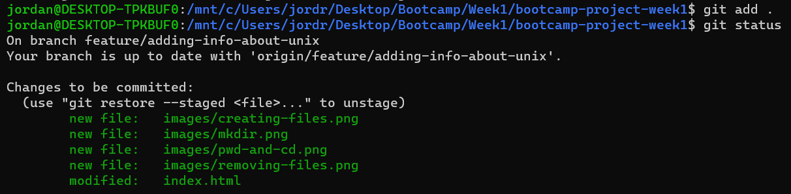

This is Jordan's Simple Web Page
A commit is when a change to a file or set of files is saved onto the branch. Each commit has its own hash ID and can be individually identified at any point in time in order to verify exactly when each bit of code was added to the project.
When a branch is created in Git, it means that all the current code is copied to a local version of the codebase. This allows people to make changes to a file they have been working on without the unfinished changes affecting the workflow of other people on the team. When the changes have been fully completed, the branch can be merged back into the original codebase (usually on the main or master branch), and at that point everyone else can pull the changes down to their versions of the codebase and have the working updates.
A pull request is essentially a notification to your team that you would like them to have a look at the changes made to the code so far in your branch. This can either be with the intent of then merging the changes in, or getting feedback in order to make the changes even better. After a pull request is opened, members of the team can comment and collaborate about whether the changes are up to par with expectations, and if not, extra commits can be added by other people on the team (or yourself). Once a pull request has been approved, it can then be merged into the 'main' or 'master' branch, and the branch it stems from can also be closed off and deleted.
Git can be used locally from the command line or via a GUI, such as GitHub Desktop. From either of these, the changes made to your local code can be pushed to a remote repository. There are a few websites that handle the remote part of Git, one being github.com and another being bitbucket.org. These remote repositories are where other members of the team can view the code, and is also usually where the main or master branch lives.
I've included some screenshots of Unix commands to do things with git below, including making and deleting branches, committing, and pushing changes to the remote repository.
Checking the git status:
Adding files to staging:

Committing files and pushing them to the remote repository:
Switching to a different branch:
Creating a new branch:
Deleting a branch:
The command to list the files that exist in your current directory is ls. Files from other directories can be listed by typing ls [path to directory], for example ls /Desktop/Work will list all the contents of the Work folder on your desktop. Flags can also be added to the parameters of the search, which allows you to define extra options for the items listed. One example is ls -a, which will list all files, including hidden files starting with just a dot, such as the hidden .git file that is created when making a folder a git repository.
These can be combined as such: ls -a /Desktop/Work. A further list of flags that can be added to the ls command can be found here.
The current working directory can be printed into the console by typing pwd, which literally stands for print working directory. This will just give a line of text stating the full path to where you currently are at in relation to your root folder. To change to a different folder, you can type cd [new folder name]. Here is an example where I start in my project folder, print the working directory, list the contents of my current folder, and then navigate into the images folder using cd images, and then on the last line you can see I am inside the /images folder:
A new directory can be created using the command mkdir [new folder name]. This will make the new directory inside the directory you are currently in. For example, if you wanted to create a new directory called example, type into the command line mkdir example. This can be seen below:
It's also possible to create a new directory in a folder you aren't currently in, and that can be done by typing mkdir [path to directory you want to create new folder in]/[new folder name]. An example of this is if we want to create a folder called new-example inside of the example folder we just made, but without ever entering the example folder ourselves, we can type mkdir example/new-example.
A new empty file can be created using Unix with the touch command. To create a new file named new-file, simply type touch new-file, and it will create an empty file with that name. In order to create a new file and instantly be able to put content inside of it, Unix has a built-in text editor called Nano, much like Notepad for Windows computers. To access this and create a new file using it, simply type nano new-file, and it will open up the Nano text editor for you to write content in. Once this has been finished and the file is saved, the new file titled new-file will have been created inside your current folder. I have put an image below to show the process of creating files using both of these methods, not including the part where you input text into the file using the Nano text editor.
To remove files using Unix, the command rm [file name] can be used. This same command can be used to remove empty directories, but a flag is needed, as the system requires explicit permission to remove whole folders - the command would be rm -d [folder name]. An extra flag can be added to remove a directory that is not empty - rm -d -r [folder name].